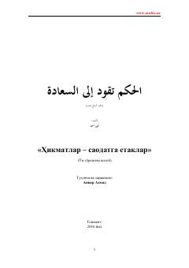

ҲСҚалбни нурлантирувчи ва ҳаёт йўлини ёритувчи ибратли ҳикматлар тўплами.
Mazkur kitob turli arabcha manbalardan тўпланиб, ўзбек тивига таржима қилинган ҳақиқатошно ва ибратли ҳикматларни ўз ичига олади. Ушбу тўртинчи ўн қисмли рисола ўқувчиларга ҳаёт ва маънавият ҳақида чуқур ўйлашга ундайдиган гўзал ўгитларни таqdim этади.